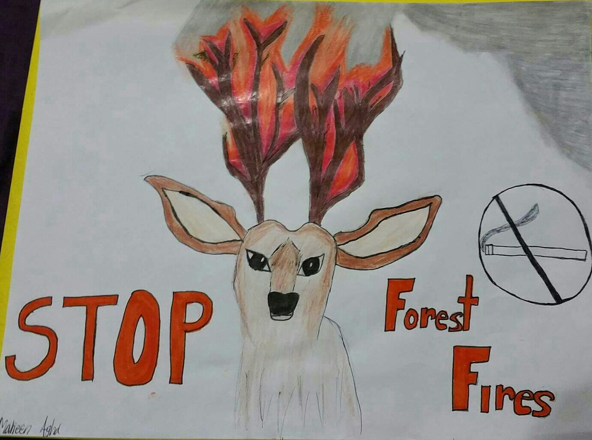
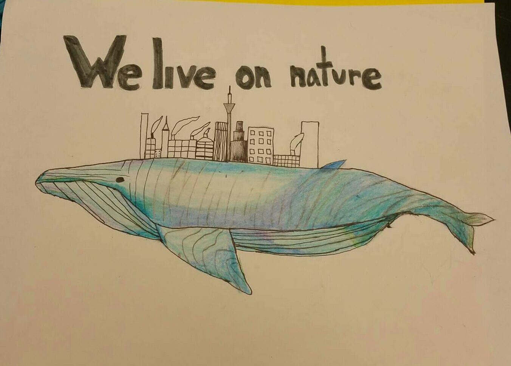

THERE'S NO ENVIRONMENT WITHOUT ME
MORE
FOREST FIRE
OUR OCEAN
ENDANGERED ANIMALS
ELECTROMAGNETIC POLLUTION
HOW TO HELP


Previous
Next
"One tree can make millions of matches, yet one match can destroy millions of trees."